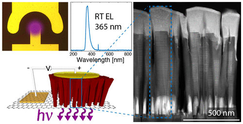

Dr. Andreas Liudi Mulyo
Welcome to my personal homepage!
I received my Ph.D. in electrical engineering (semiconductor physics) with a concentration in molecular beam epitaxy (MBE) growth of III-nitride semiconductor material at the Norwegian University of Science and Technology (NTNU) in June 2021. My main research was to investigate, develop and optimize the hybrid integration of gallium nitride/aluminum gallium nitride (GaN/AlGaN) semiconductor nanocolumns and graphene for the potential application in flip-chip ultraviolet (UV) Light-Emitting Diodes (LEDs), by employing graphene as the growth substrate and simultaneously as transparent conducting electrode. So yes, I am an (MBE) grower.
Under the direction of Prof. Bjørn-Ove Fimland, Prof. Helge Weman and Prof. Katsumi Kishino (external supervisor from Sophia University, Japan), I completed my thesis entitled "MBE of GaN/AlGaN Nanocolumns on Graphene: for Potential Application in UV-LEDs". You can read the abstract and the full version of my thesis in this link and this link, respectively.
Before pursuing Ph.D. education, I did my M.Sc. in condensed matter physics, with the specialization in optics and photonics, which I obtained from NTNU as well (August 2013). My master thesis explored the photoreflectance (PR) measurement for the characterization of InAs/GaAs quantum dot intermediate band solar cells (IBSC). PR is a modulation optical spectroscopy, a sensitive technique to determine the semiconductor band structures. IBSCs is a type of solar cell that has an additional band within the bandgap of a conventional semiconductor between conduction band and valence band. The presence of this intermediate band can absorb photons having energy lower than the conventional bandgap, therefore capable of producing additional photocurrent. During this period, Prof. Morten Kildemo, Prof. Turid Reenaas and Dr. Lars Martin Sandvik Aas acted my supervisors. If you are interested with my master thesis, its abstract and full PDF are available in here and here, respectively.
For the undergraduate study, I got the B.Eng. in engineering physics from Sepuluh Nopember Institute of Technology in July 2010, focusing on optics as my field of study. I tried to optimize the spectrograph output by identifying the line spread function, stemming from a continuous point spread function (due to the aberration on the optical components). My object of observation was Arcturus and Gacrux, two well-known astronomical objects, and they were measured during my stay in the Bosscha observatory in Bandung Institute of Technology. My supervisors were Prof. Dr. Ir. Sekartedjo, M.Sc and Prof. Dr. Hakim L. Malasan. Unfortunately, my bachelor thesis was written in Indonesian, but you can see its abstract in the following link.
Research interests
- GaN, AlGaN and III-nitride materials
- MBE growth
- Nanocolumns or nanowires
- Thin-film structures
- Hexagonal and cubic crystal structure
- Graphene and other 2D materials in general
- Optoelectronics, device design and fabrication
Education

Doctor of Philosophy (Ph.D.) in Electrical Engineering (Semiconductor Physics), June 2021 Norwegian University of Science and Technology (NTNU), Trondheim, Norway
- Thesis title: "Molecular Beam Epitaxy of GaN/AlGaN Nanocolumns on Graphene: for Potential Application in Ultraviolet Light-Emitting Diodes" [link]
- Advisors: Professor Bjørn-Ove Fimland and Professor Helge Weman
- Collaborative researcher in the Kishino Laboratory (Professor Katsumi Kishino) at Department of Engineering and Applied Science, Sophia University, Tokyo, Japan, for total of 21 months
- Area of study: Semiconductor (growth)
Norwegian University of Science and Technology (NTNU), Trondheim, Norway
- Thesis title: "Characterisation of quantum dot-intermediate band solar cells with optical spectroscopy" [link]
- Advisors: Professor Morten Kildemo, Professor Turid Dory Reenaas and Dr. Lars Martin Sandvik Aas
- Areas of study: Photonics and optics
Sepuluh Nopember Institute of Technology (ITS), Surabaya, Indonesia
- Thesis title: "Identification of the Intrinsic Spectrum of Star Using Line Spread Function of Deep Space Spectrograph-7 in Bosscha Observatory, Bandung Institute of Technology" [link, only in Indonesian]
- Advisors: Professor Sekartedjo and Professor Hakim L. Malasan
- Area of study: Optics
Click here to download my curriculum vitae (last update: June 2021).
Publication
All the findings of my research are published in the following recognized international journals:
- A. Liudi Mulyo, M. K. Rajpalke, P. E. Vullum, H. Weman, K. Kishino B-O. Fimland, "The influence of AlN buffer layer on the growth of self-assembled GaN nanocolumns on graphene," Scientific Reports, vol. 10, 853, 2020. [Full text]
- I. M. Høiaas*, A. Liudi Mulyo*, P. E. Vullum, D-C. Kim, L. Ahtapodov, B-O. Fimland, K. Kishino, H. Weman, "GaN/AlGaN nanocolumn ultraviolet light-emitting diode using double-layer graphene as substrate and transparent electrode," Nano Letters, vol. 19 (3), 1649, 2019. [Full text]
*equal contributions - A. Liudi Mulyo, M. K. Rajpalke, H. Kuroe, P. E. Vullum, H. Weman, B-O. Fimland, K. Kishino, "Vertical GaN nanocolumns grown on graphene intermediated with a thin AlN buffer layer," Nanotechnology, vol. 30 (1), 015604, 2018. [Full text]
This article was chosen as cover image/featured article, see here. - A. Liudi Mulyo, Y. Konno, J. S. Nilsen, A. T. J. van Helvoort, B-O. Fimland, H. Weman and K. Kishino, "Growth study of self-assembled GaN nanocolumns on silica glass by plasma assisted molecular beam epitaxy," Journal of Crystal Growth, vol. 480, 67, 2017.[Full text]
GaN nanocolumns were synthesized on single-layer graphene via radio-frequency plasma-assisted molecular beam epitaxy, using a thin migration-enhanced epitaxy (MEE) AlN buffer layer as nucleation sites. Due to the weak nucleation on graphene, instead of an AlN thin-film we observe two distinguished AlN formations which affect the subsequent GaN nanocolumn growth: (i) AlN islands and (ii) AlN nanostructures grown along line defects (grain boundaries or wrinkles) of graphene. Structure (i) leads to the formation of vertical GaN nanocolumns regardless of the number of AlN MEE cycles, whereas (ii) can result in random orientation of the nanocolumns depending on the AlN morphology. Additionally, there is a limited amount of direct GaN nucleation on graphene, which induces non-vertical GaN nanocolumn growth. The GaN nanocolumn samples were characterized by means of scanning electron microscopy, transmission electron microscopy, high-resolution X-ray diffraction, room temperature micro-photoluminescence, and micro-Raman measurements. Surprisingly, the graphene with AlN buffer layer formed using less MEE cycles, thus resulting in lower AlN coverage, has a lower level of nitrogen plasma damage. The AlN buffer layer with lowest AlN coverage also provides the best result with respect to high-quality and vertically-aligned GaN nanocolumns.
The many outstanding properties of graphene have impressed and intrigued scientists for the last few decades. Its transparency to light of all wavelengths combined with a low sheet resistance makes it a promising electrode material for novel optoelectronics. So far, no one has utilized graphene as both the substrate and transparent electrode of a functional optoelectronic device. Here, we demonstrate the use of double-layer graphene as a growth substrate and transparent conductive electrode for an ultraviolet light-emitting diode in a flip-chip configuration, where GaN/AlGaN nanocolumns are grown as the light-emitting structure using plasma-assisted molecular beam epitaxy. Although the sheet resistance is increased after nanocolumn growth compared with pristine double-layer graphene, our experiments show that the double-layer graphene functions adequately as an electrode. The GaN/AlGaN nanocolumns are found to exhibit a high crystal quality with no observable defects or stacking faults. Room-temperature electroluminescence measurements show a GaN related near bandgap emission peak at 365 nm and no defect-related yellow emission.
We report on the self-assembled growth of high-density and vertically-oriented n-doped GaN nanocolumns on graphene by radio-frequency plasma-assisted molecular beam epitaxy. Graphene was transferred to silica glass, which was used as the substrate carrier. Using a migration enhanced epitaxy grown AlN buffer layer for the nucleation is found to enable a high density of vertical GaN nanocolumns with c-axis growth orientation on graphene. Furthermore, micro-Raman spectroscopy indicates that the AlN buffer reduces damage on the graphene caused by impinging active N species generated by the radio-frequency plasma source during the initial growth stage and nucleation of GaN. In addition, the grown GaN nanocolumns on graphene are found to be virtually stress-free. Micro-photoluminescence measurements show near band-edge emission from wurtzite GaN, exhibiting higher GaN bandgap related photoluminescence intensity relative to a reference GaN bulk substrate and the absence of both yellow luminescence and excitonic defect emission. Transmission electron microscopy reveals the interface of GaN nanocolumns on graphene via a thin AlN buffer layer. Even though the first few monolayers of AlN on top of graphene are strained due to in-plane lattice mismatch between AlN and graphene, the grown GaN nanocolumns have a wurtzite crystal structure without observable defects. The results of this initial work pave the way towards realizing low-cost and high-performance electronic and optoelectronic devices based on III-N semiconductors grown on graphene.
We demonstrate GaN nanocolumn growth on fused silica glass by plasma-assisted molecular beam epitaxy. The effect of the substrate temperature, Ga flux and N2 flow rate on the structural and optical properties are studied. At optimum growth conditions, GaN nanocolumns are vertically aligned and well separated with an average diameter, height and density of 72 nm, 1.2 μm and 1.6 × 109 cm−2, respectively. The nanocolumns exhibit wurtzite crystal structure with no threading dislocations, stacking faults or twinning and grow in the [0 0 0 1] direction. At the interface adjacent to the glass, there is a few atom layers thick intermediate phase with ABC stacking order (zinc blende). Photoluminescence measurements evidence intense and narrow excitonic emissions, along with the absence of any defect-related zinc blende and yellow luminescence emission.
Presentation
Below are listed the conferences, workshops and symposiums, both in international as well as national scale where my works have been presented, either in oral session (marked with [Oral]) or poster session (marked with [Poster]). In general, I don't provide abstract, presentation slides or poster files in every list. In case you are interested, just send me an e-mail and I will be happily sharing them with you.
- A. Liudi Mulyo, M. K. Rajpalke, P. E. Vullum, H. Weman, K. Kishino, B-O. Fimland, "The influence of AlN buffer layer on the growth of self-assembled GaN nanocolumns on graphene," The 13th International Conferences on Nitride Semiconductors, Bellevue, Washington (Seattle), USA, July 07-12 2019. [Poster]
- A. Liudi Mulyo, D. C. Kim, I. M. Høiaas, L. Ahtapodov, H. Weman, K. Kishino, B-O. Fimland, "Utilization of graphene as substrate and bottom electrode for high-density and vertically-aligned GaN/AlGaN nanocolumns in light-emitting diodes in the UV-A," The 10th annual workshop of Norwegian PhD Network on Nanotechnology for Microsystems, Tromsø, Norway, June 17-19 2019. [Oral]
- A. Liudi Mulyo, M. K. Rajpalke, H. Kuroe, P. E. Vullum, H. Weman, B-O. Fimland, K. Kishino, "Growth and characterization of GaN nanocolumns grown on graphene using a thin AlN buffer layer," International Workshop on Nitride Semiconductors (IWN2018), Kanazawa, Japan, November 11-16 2018. [Poster]
- I. M. Høiaas, A. Liudi Mulyo, P. E. Vullum, L. Ahtapodov, D. C. Kim, B-O. Fimland, K. Kishino, H. Weman, "GaN/AlGaN nanocolumn UV LED using graphene as substrate and transparent electrode," The International Workshop on Nitride Semiconductors (IWN2018), Kanazawa, Japan, November 11-16 2018. [Poster]
- I. M. Høiaas, A. Liudi Mulyo, P. E. Vullum, L. Ahtapodov, D. C. Kim, B-O. Fimland, K. Kishino, H. Weman, "Using graphene as substrate and transparent electrode in an GaN/AlGaN nanocolumn flip-chip UV LED," Nanowire Week, Hamilton, Canada, June 11-15 2018. [Oral]
- A. Liudi Mulyo, I. M. Høiaas, M. K. Rajpalke, B-O. Fimland, H. Weman, K. Kishino, "Graphene as a substrate and bottom electrode for high density and vertically aligned GaN nanocolumns," Nano@NTNU Symposium, Trondheim, Norway, December 06-07 2017. [Poster]
- I. M. Høiaas, A. Liudi Mulyo, D. C. Kim, B-O. Fimland, K. Kishino, H. Weman, "AlGaN/GaN nanowire flip-chip UV LED using graphene as substrate and transparent electrode," Nano@NTNU Symposium, Trondheim, Norway, December 06-07 2017. [Oral]
- A. Liudi Mulyo, I. M. Høiaas, D. C. Kim, B-O. Fimland, H. Weman and K. Kishino, "AlGaN/GaN Nanocolumn Flip-Chip UV LEDs Grown on Graphene/Silica Glass," The 11th International Symposium on Semiconductor Light Emitting Devices, Banff, Canada, October 08-12 2017. [Oral]
- I. M. Høiaas, A. Liudi Mulyo, D. C. Kim, B-O. Fimland, K. Kishino, H. Weman, "Graphene as growth substrate and transparent electrode for flip-chip GaN/AlGaN nanocolumn UV-LEDs," The 8th symposium on two-dimensional materials (Carbonhagen 2017), Copenhagen, Denmark, August 16 2017. [Poster]
- A. Liudi Mulyo, B-O. Fimland, H. Weman, K. Kishino, "Epitaxial Growth of Vertical n-type GaN/AlGaN Nanocolumns on Graphene/Silica Glass," The 12th International Conferences on Nitride Semiconductors, Strasbourg, France July 24-28 2017. [Oral]
- A. Liudi Mulyo, A. T. J. van Helvoort, B-O. Fimland, H. Weman, K. Kishino, "Epitaxy Feasibility of n-type GaN/AlGaN Nanocolumns on Silica Glass," The 44th International Symposium on Compound Semiconductors (Compound Semiconductor Week 2017), Berlin, Germany, May 14-18 2017. [Oral]
- A. Liudi Mulyo, Y. Konno, B-O. Fimland, H. Weman, K. Kishino, "Growth of Self-Organized Vertical GaN Nanocolumns Utilizing AlN as Nucleation Sites on Single Layer Graphene/Silica Glass by Molecular Beam Epitaxy," International Workshop on Nitride Semiconductors (IWN2016), Orlando (Florida), USA, October 02-07 2016. [Oral]
- A. Liudi Mulyo, Y. Konno, B-O. Fimland, H. Weman, K. Kishino, "Self-Organized Vertical GaN Nanocolumns Grown on Silica Glass by RF-Molecular Beam Epitaxy," The 19th International Conference on Molecular Beam Epitaxy, Montpellier, France, September 04-09 2016. [Oral]
- A. Liudi Mulyo, Y. Konno, H. Weman, K. Kishino, "Self-Organized GaN Nanocolumns Grown on Silica Glass by RF-Molecular Beam Epitaxy," The 63rd Japanese Society of Applied Physics, Spring Meeting 2016, Tokyo, Japan, March 19-22 2016. [Oral]
Teaching
When I was a PhD student, I was involved as a lab assistant in the number of the following courses:
- TFE4167: Nanoelectronics 2 (Spring 2020 and 2021) [Course info]
- TFE4177: Semiconductor Physics with Lab (Spring 2017, 2018, 2019 and 2020) [Course info]
- TFE4575: Physical Methods for Nanostructuring and Characterization, Specialization Course (Autumn 2015, 2017 and 2018) [Course info]
- TMT4515: Chemical Methods for Synthesis and Characterization of Nanomaterial, Specialization Course (Autumn 2017 and 2018) [Course info]
- TFE4180: Semiconductor Manufacturing Technology (Spring 2015) [Course info]
Theses
Below are the list of theses I wrote for my Ph.D., master and bachelor degree, respectively:
- Andreas Liudi Mulyo, "Molecular Beam Epitaxy of GaN/AlGaN Nanocolumns on Graphene for Potential Application in Ultraviolet Light-Emitting Diodes," Institutt for elektroniske systemer, NTNU 2021 (Doctoral thesis). [Read more]
- Andreas Liudi Mulyo, "Characterisation of quantum dot-intermediate band solar cells with optical spectroscopy," Institutt for Fysikk, NTNU, 2013 (Master thesis). [Read more]
- Andreas Liudi Mulyo, "Identification of the intrinsic spectrum star using line spread function Deep Space Spectrograph-7 in Bosscha observatory, Bandung Institute of Technology," Department of Engineering Physics, Sepuluh November Institute of Technology, 2010 (Bachelor thesis). [Read more, available only in Indonesian]
Hybrid integration of defect-free III-nitride semiconductor nanocolumns and two-dimensional graphene as their substrate is an extremely promising route towards the development of ultraviolet light emitters, as graphene can be simultaneously utilized as a transparent conductive electrode. Nevertheless, a proof-of-concept of such hybrid device system has not been achieved before this work, and the study of highly dense vertical nanocolumns on graphene is also inadequately discussed. This PhD dissertation presents the investigation on the molecular beam epitaxial growth and the associated structural, optical and electrical properties of GaN nanocolumns and GaN/AlGaN nanocolumn ultraviolet light-emitting diode structures formed on graphene.
Self-organized GaN nanocolumns are grown firstly on amorphous fused silica, and then on graphene substrates by employing AlN buffer layer. High density of vertical nanocolumns characterized with excellent crystalline quality is achieved on these substrates. Particularly for the growth on graphene possessing no dangling bonds in its surface, additional study is carried out to clarify the role of the thin AlN as an intermediate layer between the formation of self-assembled GaN nanocolumns and graphene. Besides leading to the distinct arrangements of AlN that can affect the growth orientation of GaN nanocolumns, different AlN growth conditions unintentionally alter the structural properties of graphene.
Based on the understandings gained through the studies mentioned above, vertical growth of heterostructured GaN/AlGaN self-organized nanocolumns is subsequently realized on graphene. This growth orientation of the nanocolumns on graphene is essential for the light-emitting diode fabrication from as-grown nanocolumn samples. Here, graphene is employed as the growth substrate and simultaneously as the transparent conducting electrode for wurtzite GaN/AlGaN nanocolumns. In spite of high sheet resistance of graphene after the nanocolumn growth, a single excitonic emission peak can be observed at 365 and ~350 nm (ultraviolet-A region) for the devices grown on double-layer graphene and single-layer graphene, respectively.
This PhD thesis shows a vivid example on the development of nitride nanocolumn/graphene-based device technology. In this regard, the combination between these two materials provides a new approach in designing the ultraviolet light-emitting diodes, owing to the unique graphene properties.
This report describes the development of a photoreflectance (PR) technique in order to study InAs/GaAs quantum dots-based intermediate band solar cells (QD-IBSC). The motivation for this study, is that PR has previously been applied to detect the optical transitions involving the intermediate band as well as the excited states of the quantum dots (QDs). Such excited states are detrimental for the QD-IBSC performance, and they are not readily detected by photoluminescence (PL).The PR signals show several unique peaks for all samples, related to their properties. The Franz-Keldysh oscillations (FKO) are observed and the fitting is done by using Airy function. These oscillations can be used to determine electro-optic energy and the built-in electric field. Energy bandgap of the various materials composing the sample (Al(0.3)Ga(0.7)As, GaAs, wetting layer (WL) and QDs) is resolved using first derivative Lorentzian lineshape function. To complement PR findings, PL measurements for a wide range of excitation energies are conducted at room-temperature. The energy bandgap of the WL is identified in the low PL excitation energy.
Line spread function is phenomenon where there is a point spread along line because aberation on optical component. Star spectrum which obtained by using spectrograf is not able to be separated from line spread functions phenomenon because there are optical components in spectrograf. Because there is an existance of line spread functions phenomenon star spectrum obtained does not representate characteristics of that star. Separating line spread function from star spectrum then intrinsic spectrum is obtained. In this study has been conducted identification of the instrinsic spectrum star by using line spread function from comparison lamp on spectrograf. Celestial object which has been analyzed are Arcturus and Gacrux with using comparison lamp Philips WarmWhite 5W on DSS7 in 50nm 100 nm 200 nm and 400nm slit. Observation was conducted in Bosscha Observatory Bandung Institute of Technology. DSS7s line spread function is obtained by analyzing comparison lamps spectrum Philips WarmWhite 5W near H945 6562.8 . Intrinsic spectrum identification showed that 50 nm and 100 nm slit better than 200 nm and 400 nm because it can be verified from star spectra atlas. Based on identification intrinsic spetrum can be concluded that 50 nm and 100 nm are fitted for astronomical spectroscopy because those slit are able to isolate sky background better than other slit.
Fungsi sebaran garis merupakan fenomena dimana terjadinya sebaran titik yang membentuk garis akibat aberasi pada komponen optik. Spektrum bintang yang didapatkan dengan menggunakan spektrograf tentu tidak bisa dilepaskan dari fenomena fungsi sebaran garis karena terdapat komponen-komponen optik dalam spektrograf. Akibat dari adanya fungsi sebaran garis tersebut spektrum bintang yang diperoleh tidak merepresentasikan sifat dari bintang tersebut. Dengan dipisahkannya fungsi sebaran garis dari spektrum bintang maka didapatkannya spektrum intrinsik. Pada penelitian ini telah dilakukan identifikasi terhadap spektrum intrinsik bintang tunggal dengan menggunakan fungsi sebaran garis dari lampu pembanding pada spektrograf. Benda langit yang dianalisa adalah Arcturus serta Gacrux dengan menggunakan lampu pembanding Philips WarmWhite 5W pada DSS-7 Deep Space Spectrograph-7 masing-masing pada celah 50nm 100nm 200nm dan 400nm. Pengamatan dilakukan di Observatorium Bosscha Institut Teknologi Bandung Fungsi sebaran garis DSS-7 didapatkan dengan melakukan analisa spektrum lampu pembanding Philips WarmWhite 5W pada daerah panjang gelombang mendekati H945 6562.8 . Hasil identifikasi spektrum intrinsik bintang tunggal menunjukkan celah 50 nm dan 100 nm lebih baik dibandingkan celah 200 nm dan 400 nm karena bisa diverifikasi dari atlas spektral bintang. Berdasarkan hasil identifikasi spektrum intrinsik tersebut dapat disimpulkan bahwa celah yang 50 nm dan 100 nm merupakan ukuran celah yang baik untuk keperluan spektroskopi astronomi karena dapat mengisolasi latar langit lebih baik dibanding celah lainnya.
LaTeX
I used LaTeX during the writing of my PhD thesis. In its minimal working environment, the PDF of my Doctoral thesis can be seen in this link. For the template (LaTeX source), it can be downloaded from here. This template is successfully compiled using Overleaf (per 10 August 2021), a collaborative cloud-based LaTeX editor. Well, actually I wrote my whole PhD dissertation using this online platform, it works nicely! Most of the packages are basically available there, so no need to install the additional missing packages on your personal PC. In case you want to try, I have shared this custom template publicly in the Overleaf Gallery. The front cover can be customized to your liking. Feel free to use and modify!
The typesetting engine is the default one for Overleaf, which is a pdfLaTeX. I have not tried the other two engines, which are XeTeX and LuaTeX, so I am unable to comment on these. This thesis was typeset using LATEX and the book documentclass. Main text is contained within the dimension of 115 mm (width)/197.2 mm (length), where the horizontal (top:bottom) and vertical (left:right) margin ratios are 1:1. The width of the margin notes is 12 mm. Style of this thesis is inspired by Friedrich Wiemer's thesis Security Arguments and Tool-based Design of Block Ciphers.
Sebastian Kosch's Crimson, which is also available in in LaTeX font catalogue and in Google Fonts, is set as the running text (11 pt) typeface. Matthew Carter's Charter acts as the title (14.4 pt), section (10 pt), subsection (10 pt), and header (8 pt) typefaces. Hermann Zapf's Palatino serves as the page (9 pt) typeface. Christian Robertson's Roboto is utilized for the figure caption (8 pt) typeface. Libertine Open Fonts Project's Linux Libertine and Linus Romer's Miama Nueva are used for math/equation (11 pt) and calligraphical (14.4 pt) typefaces. The textgreek package provides Greek letters in normal font (being not italicized as in $math$ mode).
Six different color palettes exploited throughout this thesis are listed as follows: RGB: 0, 80, 158 , RGB: 125, 0, 45 , RGB: 255, 248, 220 , RGB: 231, 231, 231 , RGB: 0, 65, 120 , and RGB: 128, 128, 128 .
The references were processed by BibTeX/natbib -backref option enabled with modified unsrtnat bibliography style. I made the reference style to be Nature-like, but with full name of the journal. This thesis/template utilized the following packages:
| adforn | emptypage | multirow |
| amsfonts | enumitem | natbib |
| amsmath | etoolbox | newtxmath |
| amssymb | fancyhdr | nomencl |
| babel | float | nth |
| bibentry | fontenc | pgfornament |
| bookmark | footmisc | roboto |
| booktabs | geometry | setspace |
| breakcites | graphicx | tcolorbox |
| calligra | hypernat | textgreek |
| caption | hyperref | tikz |
| changepage | ifthen | titlesec |
| chapterbib | inputenc | titletoc |
| CJKutf8 | lipsum | tocbibind |
| colortbl | makeidx | url |
| crimson | marginnote | wrapfig |
| csquotes | microtype | xcolor |
| datetime | multicol | xparse |
Most of the graphics in this thesis were arranged/generated using Inkscape (free and open-source vector graphics editor) and Ngraph (freeware programe to create scientific 2-dimensional graphs): Japanese version and English version. For the 3D images, I had two of them in this thesis, the first one being generated using SketchUp (freemium, which is... ugh... not my taste), but then I moved on using the awesome Blender, a free and open-source 3D creation suite.
Contact
 |
liudimulyo[at]outlook[dot]com |
 |
+47 936 863 70 |
 |
O. S. Bragstads plass 2a, 7034 Trondheim, Norway |
See my profile in other websites:
Updated 11 August 2021